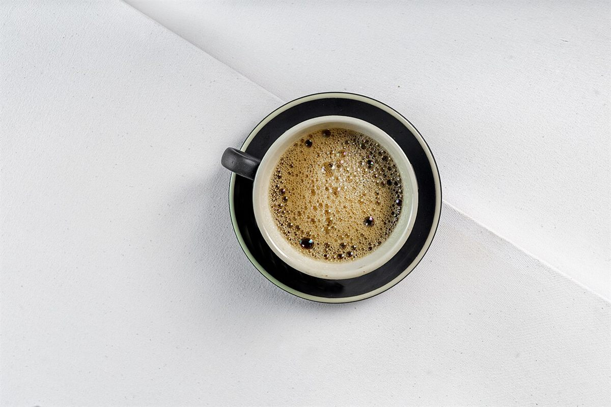
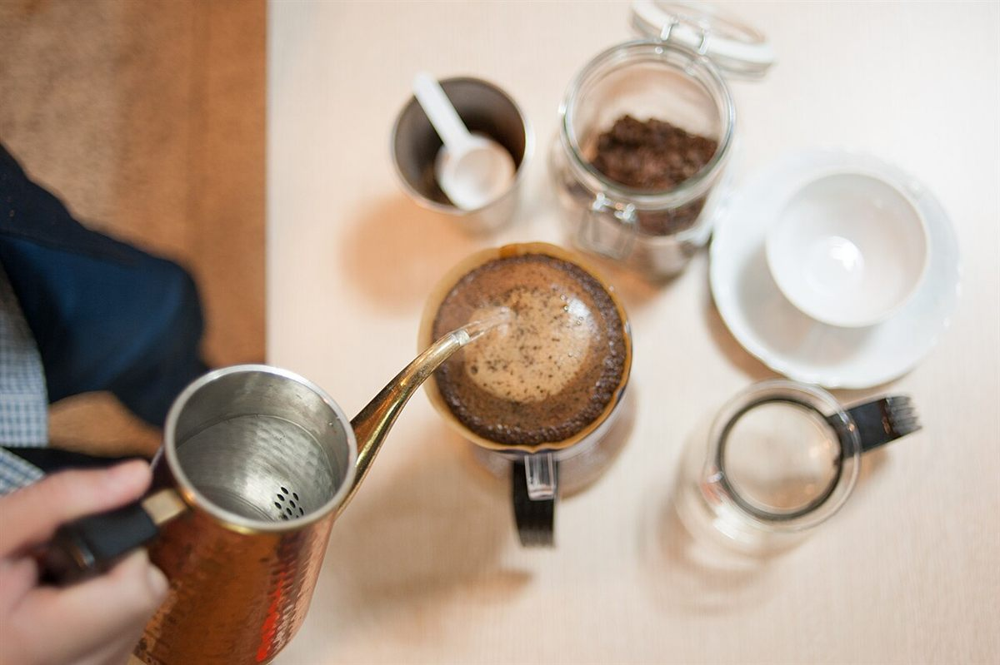
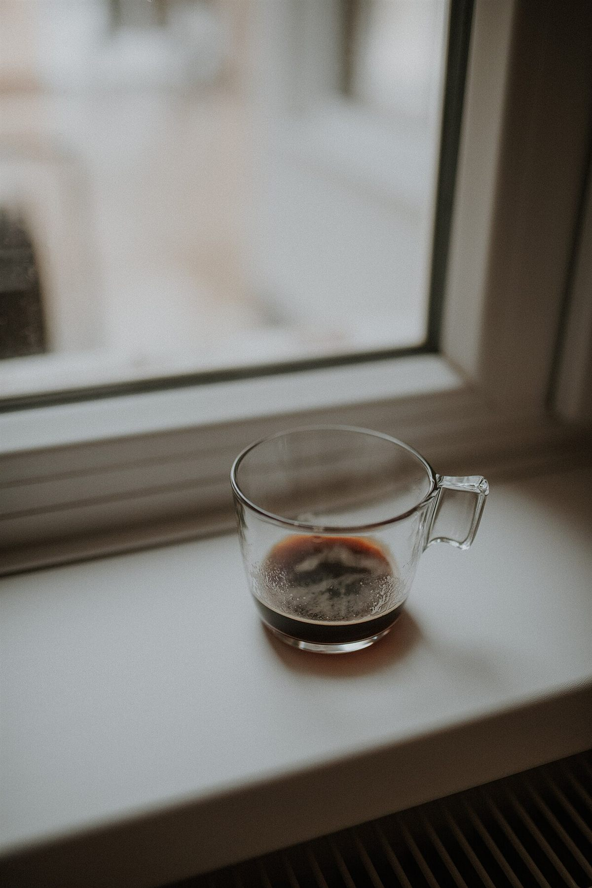

これは、コーヒーの店です。
群馬県藤岡市藤岡にある、コレハコーヒー • THIS IS COFFEE のページです。
お店の情報は確認でき次第、順に載せていきます。
営業時間: 準備中(お問い合わせください)





知りたいこと
まずは、お電話ください。
0274-25-8097営業時間・料金は準備中(お問い合わせください)
群馬県藤岡市藤岡にある、コレハコーヒー • THIS IS COFFEE のページです。
お店の情報は確認でき次第、順に載せていきます。
営業時間: 準備中(お問い合わせください)



営業時間・料金は準備中(お問い合わせください)
掲載写真はフリー素材のイメージで、店舗の実際の様子・商品ではありません。他地域で撮影されたものや、撮影地が不明なものを含みます。